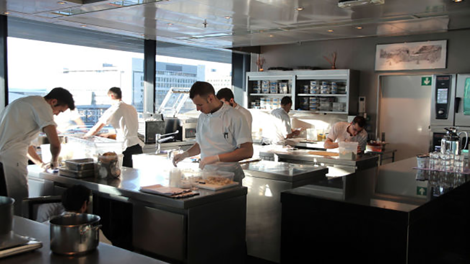

Maaemo

Nordisk mattempel med tre stjerner i Michelin-guiden. Inne på listen over verdens 50 beste restauranter. Kjøkkenet styres av Esben Holmboe Bang. Her får du servert over 20 små retter med nordiske delikatesser. Skal flytte ved det nye Munchmuseet om et års tid. Er du ekstremt opptatt av mat, så får du en fantastisk matreise hos Maaemo. Over 20 småretter med kortreist mat, presentert på aller vakreste vis. Her er kombinasjoner og smaker du ikke kommer til å lage på eget kjøkken. Råvarene er førsteklasses, og her får du en tur du aldri vil glemme gjennom det norske landskapet.